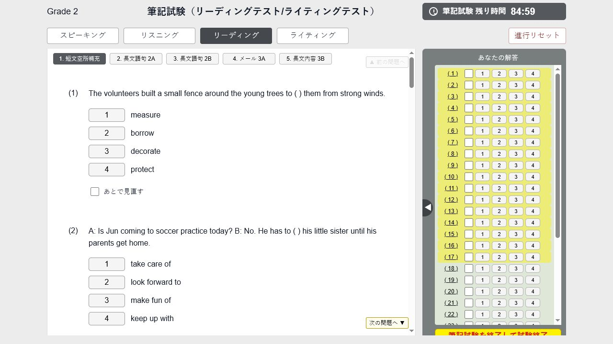
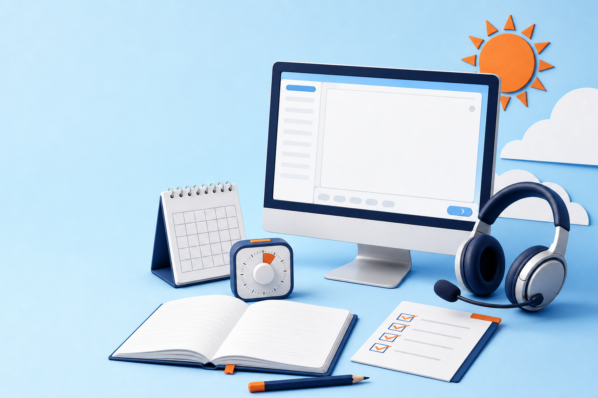
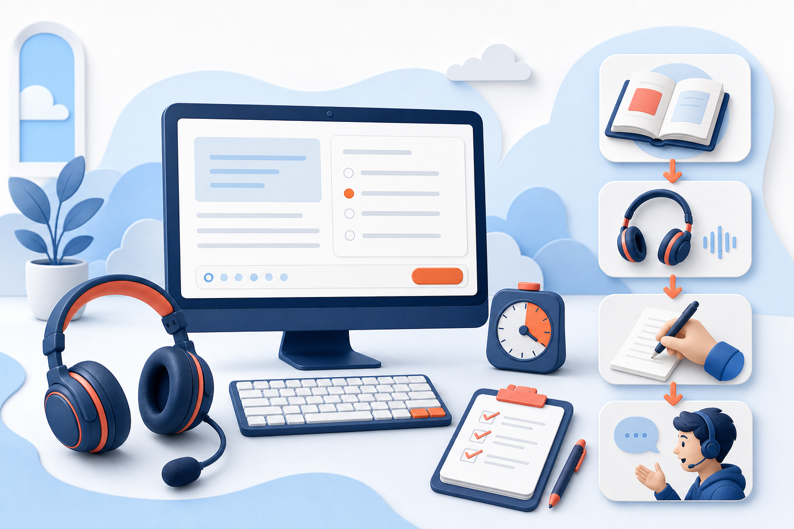
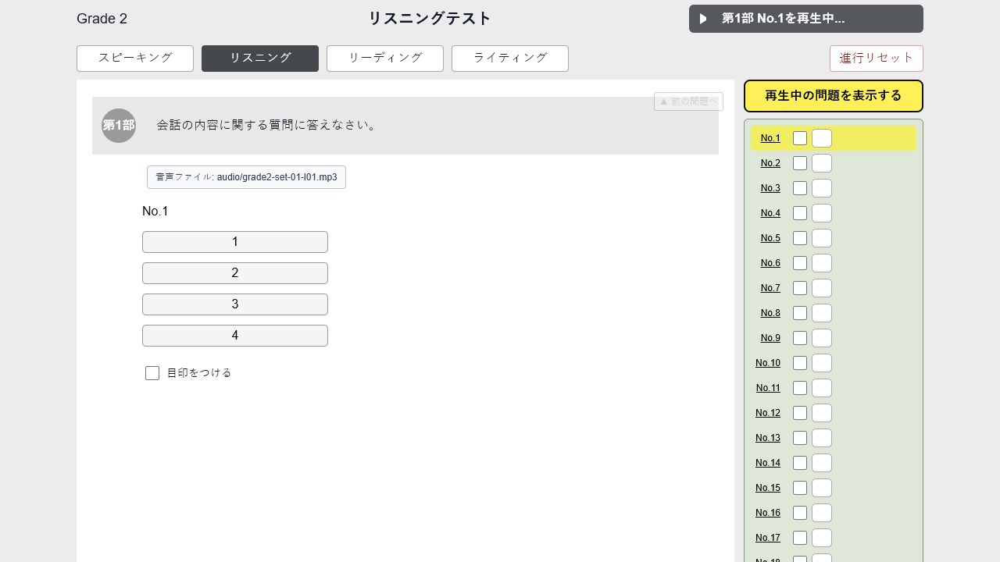
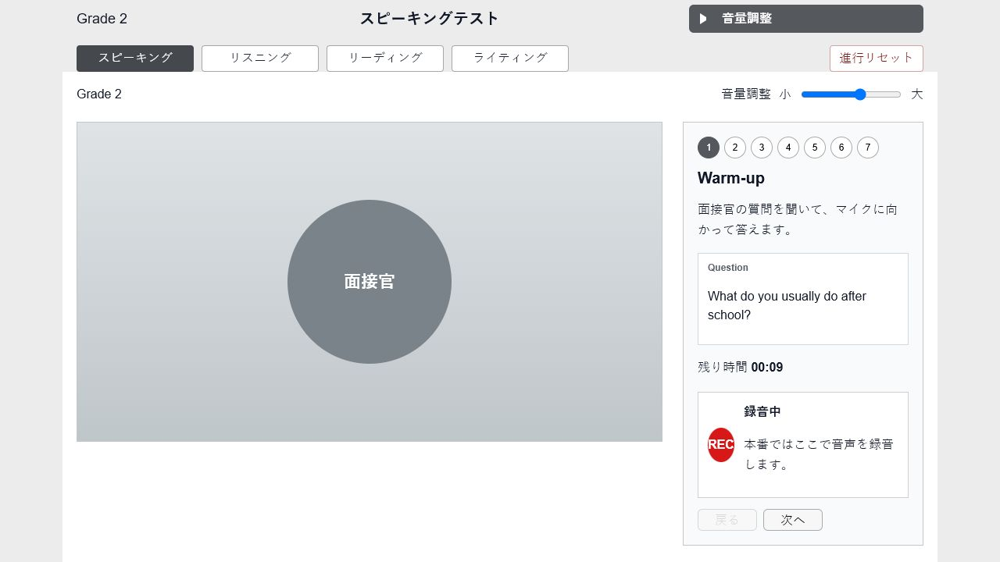
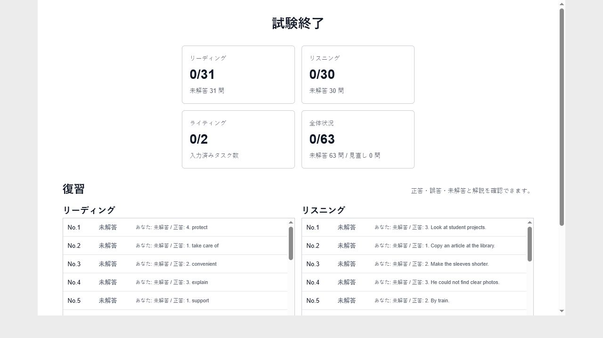

英検2級専用 | 予想問題つき | 非公式
英検® S-CBTを本番形式で通し練習。
英検1級・TOEIC 970の英語講師が制作
1日で4技能。本番形式を先に体験
練習問題が少ないS-CBT形式を、録音・タイマー・入力・見直しまで直前にリハーサル。初見の操作で焦らず、取れる点を落とさないための体験アプリです。
スピーキングから始まり、4技能の主要操作を少しずつ試せます。
英検2級専用
4技能を1回で確認
予想問題で演習
入試前の形式確認にも
録音まで体験
授業でも使いやすい
※本アプリは日本英語検定協会の公式・承認サービスではありません。英検®は同協会の登録商標です。
直前に潰す不安
録音 / 時間配分 / 見直し
実アプリ画面


短期集中リハーサル
夏休み・長期休みにぴったり
3回集中して、操作と時間配分を定着
受験直前にぴったり
1回だけでも、録音・入力・見直しを確認
料金を見る
夏休み・長期休みに、短期集中で取れる点を最大限に。
3回の本番形式をまとめて通し、4技能の操作と時間配分を定着。知識を増やすだけでなく、今ある英語力を本番の得点につなげる短期集中リハーサルです。
録音で止まる前に
マイク待機、指示、開始の流れを一度見ておく。
時間に飲まれる前に
残り時間と問題移動の見え方に慣れておく。
最後に取りこぼす前に
未解答、見直し、終了前レビューを先に体験する。
S-CBTは、英語力だけでは勝負できません。
S-CBTは1日で4技能を受けられ、従来型と同様の級・資格・CSEスコアを取得できる形式です。だからこそ、画面操作の初見で実力を出し切れないのはもったいない。事前に一度触るだけで、不安の正体が見えます。
受験機会が多いからこそ、直前準備で差がつく
録音・入力・見直しで止まる前に
S-CBT形式の予想問題がほとんどない
紙の問題演習では、録音、画面遷移、タイマー、見直しの感覚までは確認しにくい。
スピーキング録音がぶっつけ本番になる
待機、指示、録音開始の流れを知らないと、話す内容より操作に意識を取られます。
時間表示と見直しに慣れていない
残り時間、未解答、あとで見直す表示を知らないと、取れる問題を落としやすくなります。
4技能を同じ流れで試せない
リーディング、リスニング、ライティング、スピーキングをまとめて経験する機会が少ない。
子どもの不安が具体化しない
「S-CBTが不安」と言われても、どの画面で止まりそうかは実際に触らないと見えません。
授業で本番形式を見せにくい
画面操作まで含めて指導できる教材が少なく、直前確認が口頭説明だけになりやすい。
紙の過去問だけでは対策できない。本番に近い画面で、リアルな練習を。
新しい知識を増やすより、直前は「形式に慣れて実力を出し切る」ことが大事です。予想問題を解きながら、画面の動き、時間感覚、録音、見直しまでまとめて確認できます。これは勉強量を増やす道具ではなく、本番で迷う時間を減らすためのリハーサルです。

従来型と同じ級・CSEスコアに対応する形式
完全オリジナル予想問題つき



利用者の声
「親に出してもらった受験料を、操作ミスで無駄にしたくなかった」
紙の英検は受けたことがありましたが、S-CBTは初めてでした。問題よりも、音声確認や録音開始、残り時間の表示を見ながら答えることの方が不安でした。
親に出してもらった受験料を、英語力とは関係ない操作ミスで無駄にしたくなかったので、本番前に一度すべての流れを練習しました。本番では「次はどこを押すんだっけ」がなくなり、答える内容だけに集中できました。
高校3年生・M.Kさん
英検2級 合格
「英検を早く終わらせて、数学と国語に戻れたのが大きかった」
推薦・入試に使う級を早めに取りたかったので、英検対策だけに何週間も時間を使い続けることに焦りがありました。
本番前に、リーディングからスピーキングまでの流れを何度か通し、ライティング入力や録音のタイミングも確認しました。必要な級を早めに取れたことで、英検対策をいったん終わらせ、数学や国語、共通テスト対策に時間を戻せたのが一番助かりました。
高校3年生・R.Nさん
英検2級 取得
「一次試験免除の次は、スピーキングだけに集中できた」
3技能は通過できましたが、スピーキングが届かず、次は一次試験免除を使ってスピーキングだけを受けることになりました。
自分の声が録音されると、思っていた以上に無言の時間や言い直しが多いことに気づきました。このアプリで、準備時間の使い方、録音開始後の話し出し、最後まで答え切る練習を繰り返したことで、「次は何を直せばいいか」がはっきりしました。再受験への不安もかなり小さくなりました。
大学生・T.Sさん
一次免除で再受験
買い切りプラン
直前だけ使うから、買い切りで。
月額ではなく、試験前に必要な分だけ。本番形式を通して、操作の迷いと取りこぼしを減らします。
個人向けプラン共通
税込・カード1回払い
利用開始から30日
本人用PC 最大2台
保護者のカードで購入可能
現在は販売準備中です。決済と購入後の利用案内の最終確認を終えてから受付を開始します。
まず1回、本番画面を通す
980円（税込）
- PC模試 第1回
- 正答・結果表示
- 解説・スクリプト・模範解答は含まれません
迷ったらこれ
おすすめ 3回プレミアム
本番前に3回通して、迷いを減らす
1,480円（税込）
1回版に500円追加で、模試2回分と復習教材まで
- PC模試 第1〜3回
- 全問の解説・リスニング台本・ライティング模範解答
- ライティング回答型・スピーキング即答型・AI振り返り
- 録音ダウンロード・採点GPT連携（公開後）
- 7日・14日プラン・弱点別復習ルート・8ページ直前チェックPDF
販売開始後は、購入時のメールアドレスへ利用案内を送ります。利用期限・PC変更・返金条件は 購入前のご案内で確認できます。
本人にも、保護者にも、先生にも使わせやすい。
目的は長時間の勉強ではありません。試験が近い人に、本番形式を一度通してもらうこと。そこから不安が減り、当日の意識を英語そのものに戻しやすくなります。
前日か当日朝に、形式だけ先に慣れる
録音、時間表示、入力、見直しを一度見てから本番へ。余裕があれば複数回通して、画面の流れを体に入れます。
「何が不安か」を画面で一緒に確認する
子どもがつまずきそうな場面を、口頭ではなく実画面で把握できます。声かけも具体的になります。
授業で複数の生徒に本番形式を体験させる
教室利用プランなら、操作説明だけで終わらず、生徒がそれぞれのPCで流れを通せます。直前講座や集団演習にも使えます。
よくある確認
これは英検® S-CBTの予行練習アプリですか？
はい。英検® S-CBTの受験前に、CBT形式の4技能の流れを確認するための非公式リハーサルアプリです。
予想問題もできますか？
英検2級の予想問題を使い、リーディング、リスニング、ライティング、スピーキングを通しで練習できます。形式慣れを目的に、直前期に複数回使う想定です。
購入前に操作を試せますか？
はい。無料サンプルでは、スピーキング、リスニング第1部・第2部、リーディング、ライティングの主要操作を少しずつ確認できます。
何級に対応していますか？
現在の公開版は英検2級専用です。級を混同せず、2級の問題と操作練習に集中できる構成です。
点数は上がりますか？
点数を保証するものではありません。ただし、形式に慣れておくことで、当日の焦りや操作ミスを減らし、あと1問を拾いやすくすることを目的にしています。
月額ですか？
いいえ。現時点では、試験前に必要な分だけ使いやすい買い切り型を想定しています。
塾や教室で複数人利用できますか？
はい。個人向けとは別に、授業内で複数の生徒が利用できる教室利用プランがあります。利用人数と期間に合わせてご案内します。
CSEスコアや級は入試で使えますか？
利用条件は学校、学部、年度によって異なります。出願で使う場合は、必ず志望校の最新要項を確認してください。
英検S-CBTの結果は入試や推薦でも使えますか？
英検S-CBTの結果は、多くの大学・短大などで入試活用されています。ただし利用条件は学校・年度・方式により異なるため、必ず募集要項を確認してください。
本番と完全に同じですか？
完全同一ではありません。本番前に画面の流れや操作感を確認するための非公式な体験アプリです。
これは学習教材ですか？
主目的は新しい知識の学習ではなく、本番の操作と進行に慣れることです。
公式サービスですか？
いいえ。日本英語検定協会の公式サービスではありません。
「この画面、知っている」という安心を持って、本番へ。
マイク確認から準備時間・録音開始、リスニング音声後の解答、ライティング入力、残り時間と未解答の見直しまで。本番で初めて触ると、問題が解けても操作に意識を取られます。先に4技能を一度通し、「次に何が起こるか」を知っておけば、当日は画面ではなく英語そのものに集中しやすくなります。
無料サンプルで一度通す
「英語は分かるのに、初めて見る画面で止まる。そのもったいなさを減らすために、本番前に一度失敗できる場所を作りました。」